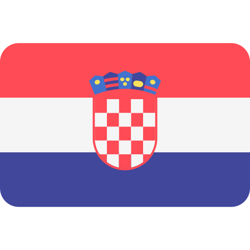

Srednju skolu je zavrsila u Kladovu jer u selu nije bilo Srednje skole. Tako su svi djaci iz sela pohadjala Srednju skolu u gradu Kladovu. Pohadjala je Srednju skolu, posle koje nije pohadjala Fakultet, iz finansiskih razloga. Uspesno je zavrsila Srednju skolu, nakon cega se vratila da radi u selu. Mislim da joj je bilo tesko da putuje svaki dan u tom periodu, ali srecom, uspela je i zavrsila Srednju skolu.
Draica Bondokic
Osnovne informacije o osobi:
- Bondokic
- Dragica
- 28.09.1974.
- 1.68cm
- 70kg
Prezime:
Ime:
Datum rodjenja:
Visina:
Tezina:

Tekst o Dragica
Dragica je zena sa sela koja je imala tezak zivot. U detinjstvu je radila sve poslove koji su se mogli obaviti na selu, od baste do brige o zivotinjama i svemu sto ih okruzuje. Osim toga, radila je razne poslove, kao sto su farbanje, zidanje... Majka nam je SVE, ona je kraljica. Zavrsila je Osnovnu skolu i Srednju skolu a Fakultet nije upisala. Njeni roditelji su ziveli u inostranstvu, ali joj tamo nisu obezbedili zivot. Cak i ako je neko vreme bila u inostranstvu, ni tamo nije bas najbolje zivela. Na kraju su se svi vratili u Srbiju i nastavili zivot ovde.
Osnovna skola
Osnovnu skolu zavrsila je u rodnom selu gde je i zivela. Bila je to mala skola, sa malo ucenika koji su morali da idu u skolu pored stvari koje su imali kod kuce. Uspesno je zavrsila Osnovnu skolu, uprkos nedacama. U skolu su se svi poznavali jer su svi iz istog sela, tako da nije bilo problema.
Srednja skola

Gde je putovala Dragica ?
U detinjstvu Dragica nije mnogo putovala, jer je pocela u srednim godinama sa suprugom, mojim ocem. Zajedno su posetili mnoge zemlje sveta, ali se tu nisu zaustavili, zele da posete jos vise i otputuju u vise zemlja. Zelja im je da odu na krstarenje, koje dugo planiraju, ali im se zelja nikad nije ispunila. Naravno pre svega, pre toga krstarenja zele da obidju nekoliko zemlja i na kraju krstarenje. Dragica jako voli da putuje, naravno da je to normalno jer kada je bila mala nije mogla, pa sada koristi svaku priliku za to. Naravno, kada su krstarenja u pitanju, Dragica bi isla na krstarenje okeanom, ali se Dejan sa tim ne slaze, pa ce se dogovoriti i otici na redovno krstarenje po Evropi.
Koje drzave je posetila Dragica:
- Romania
- Bulgaria
- Croatia 
- Bosnia si Hertegovina
- Ungaria
- Austira


- Germania
- Danemarca
- Franta
- Italia
- Spania
- Monaco
- Turcia